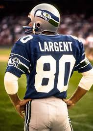

Established in 1976 as an expansion team, the Seahawks started in the American Football Conference. Playing in the Kingdome with the
city’s Major League Baseball (MLB) team, the Seattle Mariners. They played in this stadium until 1999, when the dome was demolished,
where they would temporarily play at Husky Stadium until their new stadium, Lumen Field, was built in Seattle’s Sodo neighborhood.

The team met with little to no success in the early years, with one of the few highlights being Steve Laegent, an eventual Pro
Football Hall of Fame wide receiver who received many accolades throughout his years in Seattle.